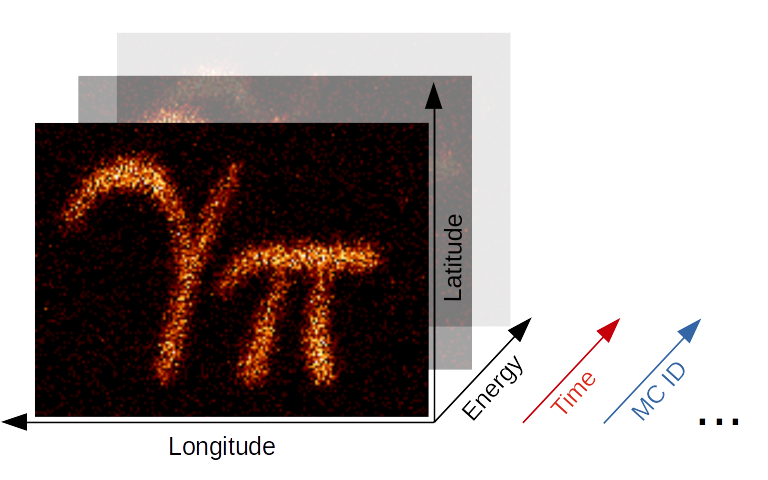

This is a fixed-text formatted version of a Jupyter notebook
Try online

You may download all the notebooks as a tar file.
Source files: maps.ipynb | maps.py
Maps#
Introduction#
The gammapy.maps submodule contains classes for representing pixilised data on the sky with an arbitrary number of non-spatial dimensions such as energy, time, event class or any possible user-defined dimension (illustrated in the image above). The main Map data structure features a uniform API for WCS as well as HEALPix based images. The API also generalizes simple image based operations such as
smoothing, interpolation and reprojection to the arbitrary extra dimensions and makes working with (2 + N)-dimensional hypercubes as easy as working with a simple 2D image. Further information is also provided on the gammapy.maps docs page.
In the following introduction we will learn all the basics of working with WCS based maps. HEALPix based maps will be covered in a future tutorial. We will cover the following topics in order:
Make sure you have worked through the Gammapy overview, because a solid knowledge about working with SkyCoord and Quantity objects as well as Numpy is required for this tutorial.
This notebook is rather lengthy, but getting to know the Map data structure in detail is essential for working with Gammapy and will allow you to fulfill complex analysis tasks with very few and simple code in future!
Setup#
[1]:
%matplotlib inline
import numpy as np
import matplotlib.pyplot as plt
import os
[2]:
from astropy import units as u
from astropy.io import fits
from astropy.table import Table
from astropy.coordinates import SkyCoord
from astropy.convolution import convolve
from gammapy.maps import Map, MapAxis, WcsGeom, WcsNDMap
from gammapy.data import EventList
Creating WCS Maps#
Using Factory Methods#
Maps are most easily created using the gammapy.maps.Map.create() factory method:
[3]:
m_allsky = Map.create()
Calling Map.create() without any further arguments creates by default an allsky WCS map using a CAR projection, ICRS coordinates and a pixel size of 1 deg. This can be easily checked by printing the .geom attribute of the map:
[4]:
print(m_allsky.geom)
WcsGeom
axes : ['lon', 'lat']
shape : (3600, 1800)
ndim : 2
frame : icrs
projection : CAR
center : 0.0 deg, 0.0 deg
width : 360.0 deg x 180.0 deg
wcs ref : 0.0 deg, 0.0 deg
The .geom attribute is a Geom object, that defines the basic geometry of the map, such as size of the pixels, width and height of the image, coordinate system etc., but we will learn more about this object later.
Besides the .geom attribute the map has also a .data attribute, which is just a plain numpy.ndarray and stores the data associated with this map:
[5]:
m_allsky.data
[5]:
array([[0., 0., 0., ..., 0., 0., 0.],
[0., 0., 0., ..., 0., 0., 0.],
[0., 0., 0., ..., 0., 0., 0.],
...,
[0., 0., 0., ..., 0., 0., 0.],
[0., 0., 0., ..., 0., 0., 0.],
[0., 0., 0., ..., 0., 0., 0.]], dtype=float32)
By default maps are filled with zeros.
The map_type argument can be used to control the pixelization scheme (WCS or HPX).
[6]:
position = SkyCoord(0.0, 5.0, frame="galactic", unit="deg")
# Create a WCS Map
m_wcs = Map.create(binsz=0.1, map_type="wcs", skydir=position, width=10.0)
# Create a HPX Map
m_hpx = Map.create(binsz=0.1, map_type="hpx", skydir=position, width=10.0)
WARNING: version mismatch between CFITSIO header (v4.000999999999999) and linked library (v4.01).
WARNING: version mismatch between CFITSIO header (v4.000999999999999) and linked library (v4.01).
WARNING: version mismatch between CFITSIO header (v4.000999999999999) and linked library (v4.01).
Here is an example that creates a WCS map centered on the Galactic center and now uses Galactic coordinates:
[7]:
skydir = SkyCoord(0, 0, frame="galactic", unit="deg")
m_gc = Map.create(
binsz=0.02, width=(10, 5), skydir=skydir, frame="galactic", proj="TAN"
)
print(m_gc.geom)
WcsGeom
axes : ['lon', 'lat']
shape : (500, 250)
ndim : 2
frame : galactic
projection : TAN
center : 0.0 deg, 0.0 deg
width : 10.0 deg x 5.0 deg
wcs ref : 0.0 deg, 0.0 deg
In addition we have defined a TAN projection, a pixel size of 0.02 deg and a width of the map of 10 deg x 5 deg. The width argument also takes scalar value instead of a tuple, which is interpreted as both the width and height of the map, so that a quadratic map is created.
Creating from a Map Geometry#
As we have seen in the first examples, the Map object couples the data (stored as a numpy.ndarray) with a Geom object. The Geom object can be seen as a generalization of an astropy.wcs.WCS object, providing the information on how the data maps to physical coordinate systems. In some cases e.g. when creating many maps with the same WCS geometry it can be advantegeous to first create the map geometry independent of the map object itsself:
[8]:
wcs_geom = WcsGeom.create(
binsz=0.02, width=(10, 5), skydir=(0, 0), frame="galactic"
)
And then create the map objects from the wcs_geom geometry specification:
[9]:
maps = {}
for name in ["counts", "background"]:
maps[name] = Map.from_geom(wcs_geom)
The Geom object also has a few helpful methods. E.g. we can check whether a given position on the sky is contained in the map geometry:
[10]:
# define the position of the Galactic center and anti-center
positions = SkyCoord([0, 180], [0, 0], frame="galactic", unit="deg")
wcs_geom.contains(positions)
[10]:
array([ True, False])
Or get the image center of the map:
[11]:
wcs_geom.center_skydir
[11]:
<SkyCoord (Galactic): (l, b) in deg
(0., 0.)>
Or we can also retrieve the solid angle per pixel of the map:
[12]:
wcs_geom.solid_angle()
[12]:
Adding Non-Spatial Axes#
In many analysis scenarios we would like to add extra dimension to the maps to study e.g. energy or time dependency of the data. Those non-spatial dimensions are handled with the MapAxis object. Let us first define an energy axis, with 4 bins:
[13]:
energy_axis = MapAxis.from_bounds(
1, 100, nbin=4, unit="TeV", name="energy", interp="log"
)
print(energy_axis)
MapAxis
name : energy
unit : 'TeV'
nbins : 4
node type : edges
edges min : 1.0e+00 TeV
edges max : 1.0e+02 TeV
interp : log
Where interp='log' specifies that a logarithmic spacing is used between the bins, equivalent to np.logspace(0, 2, 4). This MapAxis object we can now pass to Map.create() using the axes= argument:
[14]:
m_cube = Map.create(
binsz=0.02, width=(10, 5), frame="galactic", axes=[energy_axis]
)
print(m_cube.geom)
WcsGeom
axes : ['lon', 'lat', 'energy']
shape : (500, 250, 4)
ndim : 3
frame : galactic
projection : CAR
center : 0.0 deg, 0.0 deg
width : 10.0 deg x 5.0 deg
wcs ref : 0.0 deg, 0.0 deg
Now we see that besides lon and lat the map has an additional axes named energy with 4 bins. The total dimension of the map is now ndim=3.
We can also add further axes by passing a list of MapAxis objects. To demonstrate this we create a time axis with linearly spaced bins and pass both axes to Map.create():
[15]:
time_axis = MapAxis.from_bounds(
0, 24, nbin=24, unit="hour", name="time", interp="lin"
)
m_4d = Map.create(
binsz=0.02, width=(10, 5), frame="galactic", axes=[energy_axis, time_axis]
)
print(m_4d.geom)
WcsGeom
axes : ['lon', 'lat', 'energy', 'time']
shape : (500, 250, 4, 24)
ndim : 4
frame : galactic
projection : CAR
center : 0.0 deg, 0.0 deg
width : 10.0 deg x 5.0 deg
wcs ref : 0.0 deg, 0.0 deg
The MapAxis object internally stores the coordinates or “position values” associated with every map axis bin or “node”. We distinguish between two node types: edges and center. The node type edges(which is also the default) specifies that the data associated with this axis is integrated between the edges of the bin (e.g. counts data). The node type center specifies that the data is given at the center of the bin (e.g. exposure or differential fluxes).
The edges of the bins can be checked with .edges attribute:
[16]:
energy_axis.edges
[16]:
The numbers are given in the units we specified above, which can be checked again with:
[17]:
energy_axis.unit
[17]:
The centers of the axis bins can be checked with the .center attribute:
[18]:
energy_axis.center
[18]:
Reading and Writing#
Gammapy Map objects are serialized using the Flexible Image Transport Format (FITS). Depending on the pixelisation scheme (HEALPix or WCS) and presence of non-spatial dimensions the actual convention to write the FITS file is different. By default Gammpy uses a generic convention named gadf, which will support WCS and HEALPix formats as well as an arbitrary number of non-spatial axes. The convention is documented in detail on the Gamma Astro Data
Formats page.
Other conventions required by specific software (e.g. the Fermi Science Tools) are supported as well. At the moment those are the following
fgst-ccube: Fermi counts cube format.fgst-ltcube: Fermi livetime cube format.fgst-bexpcube: Fermi exposure cube formatfgst-template: Fermi Galactic diffuse and source template format.fgst-srcmapandfgst-srcmap-sparse: Fermi source map and sparse source map format.
The conventions listed above only support an additional energy axis.
Reading Maps#
Reading FITS files is mainly exposed via the Map.read() method.Let us take a look at a first example:
[19]:
filename = "$GAMMAPY_DATA/fermi-3fhl-gc/fermi-3fhl-gc-counts.fits.gz"
m_3fhl_gc = Map.read(filename)
print(m_3fhl_gc)
WcsNDMap
geom : WcsGeom
axes : ['lon', 'lat']
shape : (400, 200)
ndim : 2
unit :
dtype : >i8
If map_type argument is not given when calling read a map object will be instantiated with the pixelization of the input HDU.
By default Map.read() will try to find the first valid data hdu in the filename and read the data from there. If multiple HDUs are present in the FITS file, the desired one can be chosen with the additional hdu= argument:
[20]:
m_3fhl_gc = Map.read(filename, hdu="PRIMARY")
print(m_3fhl_gc)
WcsNDMap
geom : WcsGeom
axes : ['lon', 'lat']
shape : (400, 200)
ndim : 2
unit :
dtype : >i8
In rare cases e.g. when the FITS file is not valid or meta data is missing from the header it can be necessary to modify the header of a certain HDU before creating the Map object. In this case we can use astropy.io.fits directly to read the FITS file:
[21]:
filename = (
os.environ["GAMMAPY_DATA"]
+ "/fermi-3fhl-gc/fermi-3fhl-gc-exposure.fits.gz"
)
hdulist = fits.open(filename)
hdulist.info()
Filename: /Users/adonath/github/gammapy/gammapy-data/fermi-3fhl-gc/fermi-3fhl-gc-exposure.fits.gz
No. Name Ver Type Cards Dimensions Format
0 PRIMARY 1 PrimaryHDU 23 (400, 200) float32
And then modify the header keyword and use Map.from_hdulist() to create the Map object after:
[22]:
hdulist["PRIMARY"].header["BUNIT"] = "cm2 s"
Map.from_hdulist(hdulist=hdulist)
[22]:
WcsNDMap
geom : WcsGeom
axes : ['lon', 'lat']
shape : (400, 200)
ndim : 2
unit : cm2 s
dtype : >f4
Writing Maps#
Writing FITS files is mainoy exposure via the Map.write() method. Here is a first example:
[23]:
m_cube.write("example_cube.fits", overwrite=True)
By default Gammapy does not overwrite files. In this example we set overwrite=True in case the cell gets executed multiple times. Now we can read back the cube from disk using Map.read():
[24]:
m_cube = Map.read("example_cube.fits")
print(m_cube)
WcsNDMap
geom : WcsGeom
axes : ['lon', 'lat', 'energy']
shape : (500, 250, 4)
ndim : 3
unit :
dtype : >f4
We can also choose a different FITS convention to write the example cube in a format compatible to the Fermi Galactic diffuse background model:
[25]:
m_cube.write("example_cube_fgst.fits", format="fgst-template", overwrite=True)
To understand a little bit better the generic gadf convention we use Map.to_hdulist() to generate a list of FITS HDUs first:
[26]:
hdulist = m_4d.to_hdulist(format="gadf")
hdulist.info()
Filename: (No file associated with this HDUList)
No. Name Ver Type Cards Dimensions Format
0 PRIMARY 1 PrimaryHDU 30 (500, 250, 4, 24) float32
1 PRIMARY_BANDS 1 BinTableHDU 33 96R x 7C ['K', 'D', 'D', 'D', 'D', 'D', 'D']
As we can see the HDUList object contains to HDUs. The first one named PRIMARY contains the data array with shape corresponding to our data and the WCS information stored in the header:
[27]:
hdulist["PRIMARY"].header
[27]:
SIMPLE = T / conforms to FITS standard
BITPIX = -32 / array data type
NAXIS = 4 / number of array dimensions
NAXIS1 = 500
NAXIS2 = 250
NAXIS3 = 4
NAXIS4 = 24
EXTEND = T
WCSAXES = 2 / Number of coordinate axes
CRPIX1 = 250.5 / Pixel coordinate of reference point
CRPIX2 = 125.5 / Pixel coordinate of reference point
CDELT1 = -0.02 / [deg] Coordinate increment at reference point
CDELT2 = 0.02 / [deg] Coordinate increment at reference point
CUNIT1 = 'deg' / Units of coordinate increment and value
CUNIT2 = 'deg' / Units of coordinate increment and value
CTYPE1 = 'GLON-CAR' / galactic longitude, plate caree projection
CTYPE2 = 'GLAT-CAR' / galactic latitude, plate caree projection
CRVAL1 = 0.0 / [deg] Coordinate value at reference point
CRVAL2 = 0.0 / [deg] Coordinate value at reference point
LONPOLE = 0.0 / [deg] Native longitude of celestial pole
LATPOLE = 90.0 / [deg] Native latitude of celestial pole
MJDREF = 0.0 / [d] MJD of fiducial time
AXCOLS1 = 'E_MIN,E_MAX'
INTERP1 = 'log '
AXCOLS2 = 'TIME_MIN,TIME_MAX'
INTERP2 = 'lin '
WCSSHAPE= '(500,250,4,24)'
BANDSHDU= 'PRIMARY_BANDS'
META = '{} '
BUNIT = ''
The second HDU is a BinTableHDU named PRIMARY_BANDS contains the information on the non-spatial axes such as name, order, unit, min, max and center values of the axis bins. We use an astropy.table.Table to show the information:
[28]:
Table.read(hdulist["PRIMARY_BANDS"])
[28]:
| CHANNEL | ENERGY | E_MIN | E_MAX | TIME | TIME_MIN | TIME_MAX |
|---|---|---|---|---|---|---|
| TeV | TeV | TeV | h | h | h | |
| int64 | float64 | float64 | float64 | float64 | float64 | float64 |
| 0 | 1.778279410038923 | 1.0 | 3.1622776601683795 | 0.5 | 0.0 | 1.0 |
| 1 | 5.623413251903492 | 3.1622776601683795 | 10.000000000000002 | 0.5 | 0.0 | 1.0 |
| 2 | 17.782794100389236 | 10.000000000000002 | 31.622776601683803 | 0.5 | 0.0 | 1.0 |
| 3 | 56.234132519034915 | 31.622776601683803 | 100.00000000000004 | 0.5 | 0.0 | 1.0 |
| 4 | 1.778279410038923 | 1.0 | 3.1622776601683795 | 1.5 | 1.0 | 2.0 |
| 5 | 5.623413251903492 | 3.1622776601683795 | 10.000000000000002 | 1.5 | 1.0 | 2.0 |
| 6 | 17.782794100389236 | 10.000000000000002 | 31.622776601683803 | 1.5 | 1.0 | 2.0 |
| 7 | 56.234132519034915 | 31.622776601683803 | 100.00000000000004 | 1.5 | 1.0 | 2.0 |
| 8 | 1.778279410038923 | 1.0 | 3.1622776601683795 | 2.5 | 2.0 | 3.0 |
| 9 | 5.623413251903492 | 3.1622776601683795 | 10.000000000000002 | 2.5 | 2.0 | 3.0 |
| 10 | 17.782794100389236 | 10.000000000000002 | 31.622776601683803 | 2.5 | 2.0 | 3.0 |
| 11 | 56.234132519034915 | 31.622776601683803 | 100.00000000000004 | 2.5 | 2.0 | 3.0 |
| 12 | 1.778279410038923 | 1.0 | 3.1622776601683795 | 3.5 | 3.0 | 4.0 |
| 13 | 5.623413251903492 | 3.1622776601683795 | 10.000000000000002 | 3.5 | 3.0 | 4.0 |
| 14 | 17.782794100389236 | 10.000000000000002 | 31.622776601683803 | 3.5 | 3.0 | 4.0 |
| 15 | 56.234132519034915 | 31.622776601683803 | 100.00000000000004 | 3.5 | 3.0 | 4.0 |
| 16 | 1.778279410038923 | 1.0 | 3.1622776601683795 | 4.5 | 4.0 | 5.0 |
| 17 | 5.623413251903492 | 3.1622776601683795 | 10.000000000000002 | 4.5 | 4.0 | 5.0 |
| 18 | 17.782794100389236 | 10.000000000000002 | 31.622776601683803 | 4.5 | 4.0 | 5.0 |
| 19 | 56.234132519034915 | 31.622776601683803 | 100.00000000000004 | 4.5 | 4.0 | 5.0 |
| 20 | 1.778279410038923 | 1.0 | 3.1622776601683795 | 5.5 | 5.0 | 6.0 |
| 21 | 5.623413251903492 | 3.1622776601683795 | 10.000000000000002 | 5.5 | 5.0 | 6.0 |
| ... | ... | ... | ... | ... | ... | ... |
| 73 | 5.623413251903492 | 3.1622776601683795 | 10.000000000000002 | 18.5 | 18.0 | 19.0 |
| 74 | 17.782794100389236 | 10.000000000000002 | 31.622776601683803 | 18.5 | 18.0 | 19.0 |
| 75 | 56.234132519034915 | 31.622776601683803 | 100.00000000000004 | 18.5 | 18.0 | 19.0 |
| 76 | 1.778279410038923 | 1.0 | 3.1622776601683795 | 19.5 | 19.0 | 20.0 |
| 77 | 5.623413251903492 | 3.1622776601683795 | 10.000000000000002 | 19.5 | 19.0 | 20.0 |
| 78 | 17.782794100389236 | 10.000000000000002 | 31.622776601683803 | 19.5 | 19.0 | 20.0 |
| 79 | 56.234132519034915 | 31.622776601683803 | 100.00000000000004 | 19.5 | 19.0 | 20.0 |
| 80 | 1.778279410038923 | 1.0 | 3.1622776601683795 | 20.5 | 20.0 | 21.0 |
| 81 | 5.623413251903492 | 3.1622776601683795 | 10.000000000000002 | 20.5 | 20.0 | 21.0 |
| 82 | 17.782794100389236 | 10.000000000000002 | 31.622776601683803 | 20.5 | 20.0 | 21.0 |
| 83 | 56.234132519034915 | 31.622776601683803 | 100.00000000000004 | 20.5 | 20.0 | 21.0 |
| 84 | 1.778279410038923 | 1.0 | 3.1622776601683795 | 21.5 | 21.0 | 22.0 |
| 85 | 5.623413251903492 | 3.1622776601683795 | 10.000000000000002 | 21.5 | 21.0 | 22.0 |
| 86 | 17.782794100389236 | 10.000000000000002 | 31.622776601683803 | 21.5 | 21.0 | 22.0 |
| 87 | 56.234132519034915 | 31.622776601683803 | 100.00000000000004 | 21.5 | 21.0 | 22.0 |
| 88 | 1.778279410038923 | 1.0 | 3.1622776601683795 | 22.5 | 22.0 | 23.0 |
| 89 | 5.623413251903492 | 3.1622776601683795 | 10.000000000000002 | 22.5 | 22.0 | 23.0 |
| 90 | 17.782794100389236 | 10.000000000000002 | 31.622776601683803 | 22.5 | 22.0 | 23.0 |
| 91 | 56.234132519034915 | 31.622776601683803 | 100.00000000000004 | 22.5 | 22.0 | 23.0 |
| 92 | 1.778279410038923 | 1.0 | 3.1622776601683795 | 23.5 | 23.0 | 24.0 |
| 93 | 5.623413251903492 | 3.1622776601683795 | 10.000000000000002 | 23.5 | 23.0 | 24.0 |
| 94 | 17.782794100389236 | 10.000000000000002 | 31.622776601683803 | 23.5 | 23.0 | 24.0 |
| 95 | 56.234132519034915 | 31.622776601683803 | 100.00000000000004 | 23.5 | 23.0 | 24.0 |
Maps can be serialized to a sparse data format by calling write with sparse=True. This will write all non-zero pixels in the map to a data table appropriate to the pixelization scheme.
[29]:
m = Map.create(binsz=0.1, map_type="wcs", width=10.0)
m.write("file.fits", hdu="IMAGE", sparse=True, overwrite=True)
m = Map.read("file.fits", hdu="IMAGE", map_type="wcs")
Accessing Data#
How to get data values#
All map objects have a set of accessor methods, which can be used to access or update the contents of the map irrespective of its underlying representation. Those accessor methods accept as their first argument a coordinate tuple containing scalars, list, or numpy.ndarray with one tuple element for each dimension. Some methods additionally accept a dict or MapCoord argument, of which both allow to assign coordinates by axis name.
Let us first begin with the .get_by_idx() method, that accepts a tuple of indices. The order of the indices corresponds to the axis order of the map:
[30]:
m_gc.get_by_idx((50, 30))
[30]:
array([0.], dtype=float32)
Important: Gammapy uses a reversed index order in the map API with the longitude axes first. To achieve the same by directly indexing into the numpy array we have to call:
[31]:
m_gc.data[([30], [50])]
[31]:
array([0.], dtype=float32)
To check the order of the axes you can always print the .geom attribute:
[32]:
print(m_gc.geom)
WcsGeom
axes : ['lon', 'lat']
shape : (500, 250)
ndim : 2
frame : galactic
projection : TAN
center : 0.0 deg, 0.0 deg
width : 10.0 deg x 5.0 deg
wcs ref : 0.0 deg, 0.0 deg
To access values directly by sky coordinates we can use the .get_by_coord() method. This time we pass in a dict, specifying the axes names corresponding to the given coordinates:
[33]:
m_gc.get_by_coord({"lon": [0, 180], "lat": [0, 0]})
[33]:
array([ 0., nan])
The units of the coordinates are assumed to be in degrees in the coordinate system used by the map. If the coordinates do not correspond to the exact pixel center, the value of the nearest pixel center will be returned. For positions outside the map geometry np.nan is returned.
The coordinate or idx arrays follow normal Numpy broadcasting rules. So the following works as expected:
[34]:
lons = np.linspace(-4, 4, 10)
m_gc.get_by_coord({"lon": lons, "lat": 0})
[34]:
array([0., 0., 0., 0., 0., 0., 0., 0., 0., 0.], dtype=float32)
Or as an even more advanced example, we can provide lats as column vector and broadcasting to a 2D result array will be applied:
[35]:
lons = np.linspace(-4, 4, 8)
lats = np.linspace(-4, 4, 8).reshape(-1, 1)
m_gc.get_by_coord({"lon": lons, "lat": lats})
[35]:
array([[nan, nan, nan, nan, nan, nan, nan, nan],
[nan, nan, nan, nan, nan, nan, nan, nan],
[ 0., 0., 0., 0., 0., 0., 0., 0.],
[ 0., 0., 0., 0., 0., 0., 0., 0.],
[ 0., 0., 0., 0., 0., 0., 0., 0.],
[ 0., 0., 0., 0., 0., 0., 0., 0.],
[nan, nan, nan, nan, nan, nan, nan, nan],
[nan, nan, nan, nan, nan, nan, nan, nan]])
Indexing and Slicing Sub-Maps#
When you have worked with Numpy arrays in the past you are probably familiar with the concept of indexing and slicing into data arrays. To support slicing of non-spatial axes of Map objects, the Map object has a .slice_by_idx() method, which allows to extract sub-maps from a larger map.
The following example demonstrates how to get the map at the energy bin number 3:
[36]:
m_sub = m_cube.slice_by_idx({"energy": 3})
print(m_sub)
WcsNDMap
geom : WcsGeom
axes : ['lon', 'lat']
shape : (500, 250)
ndim : 2
unit :
dtype : >f4
Note that the returned object is again a Map with updated axes information. In this case, because we extracted only a single image, the energy axes is dropped from the map.
To extract a sub-cube with a sliced energy axes we can use a normal slice() object:
[37]:
m_sub = m_cube.slice_by_idx({"energy": slice(1, 3)})
print(m_sub)
WcsNDMap
geom : WcsGeom
axes : ['lon', 'lat', 'energy']
shape : (500, 250, 2)
ndim : 3
unit :
dtype : >f4
Note that the returned object is also a Map object, but this time with updated energy axis specification.
Slicing of multiple dimensions is supported by adding further entries to the dict passed to .slice_by_idx()
[38]:
m_sub = m_4d.slice_by_idx({"energy": slice(1, 3), "time": slice(4, 10)})
print(m_sub)
WcsNDMap
geom : WcsGeom
axes : ['lon', 'lat', 'energy', 'time']
shape : (500, 250, 2, 6)
ndim : 4
unit :
dtype : float32
For convenience there is also a .get_image_by_coord() method which allows to access image planes at given non-spatial physical coordinates. This method also supports Quantity objects:
[39]:
image = m_4d.get_image_by_coord({"energy": 4 * u.TeV, "time": 5 * u.h})
print(image.geom)
WcsGeom
axes : ['lon', 'lat']
shape : (500, 250)
ndim : 2
frame : galactic
projection : CAR
center : 0.0 deg, 0.0 deg
width : 10.0 deg x 5.0 deg
wcs ref : 0.0 deg, 0.0 deg
Iterating by image#
For maps with non-spatial dimensions the ~Map.iter_by_image_data method can be used to loop over image slices. The image plane index idx is returned in data order, so that the data array can be indexed directly. Here is an example for an in-place convolution of an image using astropy.convolution.convolve to interpolate NaN values:
[40]:
axis1 = MapAxis([1, 10, 100], interp="log", name="energy")
axis2 = MapAxis([1, 2, 3], interp="lin", name="time")
m = Map.create(width=(5, 3), axes=[axis1, axis2], binsz=0.1)
m.data[:, :, 15:18, 20:25] = np.nan
for img, idx in m.iter_by_image_data():
kernel = np.ones((5, 5))
m.data[idx] = convolve(img, kernel)
assert not np.isnan(m.data).any()
Modifying Data#
How to set data values#
To modify and set map data values the Map object features as well a .set_by_idx() method:
[41]:
m_cube.set_by_idx(idx=(10, 20, 3), vals=42)
here we check that data have been updated:
[42]:
m_cube.get_by_idx((10, 20, 3))
[42]:
array([42.], dtype=float32)
Of course there is also a .set_by_coord() method, which allows to set map data values in physical coordinates.
[43]:
m_cube.set_by_coord({"lon": 0, "lat": 0, "energy": 2 * u.TeV}, vals=42)
Again the lon and lat values are assumed to be given in degrees in the coordinate system used by the map. For the energy axis, the unit is the one specified on the axis (use m_cube.geom.axes[0].unit to check if needed…).
All .xxx_by_coord() methods accept SkyCoord objects as well. In this case we have to use the skycoord keyword instead of lon and lat:
[44]:
skycoords = SkyCoord([1.2, 3.4], [-0.5, 1.1], frame="galactic", unit="deg")
m_cube.set_by_coord({"skycoord": skycoords, "energy": 2 * u.TeV}, vals=42)
Filling maps from event lists#
This example shows how to fill a counts cube from an event list:
[45]:
energy_axis = MapAxis.from_bounds(
10.0, 2e3, 12, interp="log", name="energy", unit="GeV"
)
counts_3d = WcsNDMap.create(
binsz=0.1, width=10.0, skydir=(0, 0), frame="galactic", axes=[energy_axis]
)
events = EventList.read(
"$GAMMAPY_DATA/fermi-3fhl-gc/fermi-3fhl-gc-events.fits.gz"
)
counts_3d.fill_by_coord({"skycoord": events.radec, "energy": events.energy})
counts_3d.write("ccube.fits", format="fgst-ccube", overwrite=True)
Alternatively you can use the fill_events method:
[46]:
counts_3d = WcsNDMap.create(
binsz=0.1, width=10.0, skydir=(0, 0), frame="galactic", axes=[energy_axis]
)
counts_3d.fill_events(events)
If you have a given map already, and want to make a counts image with the same geometry (not using the pixel data from the original map), you can also use the fill_events method.
[47]:
events = EventList.read(
"$GAMMAPY_DATA/fermi-3fhl-gc/fermi-3fhl-gc-events.fits.gz"
)
reference_map = Map.read(
"$GAMMAPY_DATA/fermi-3fhl-gc/fermi-3fhl-gc-counts.fits.gz"
)
counts = Map.from_geom(reference_map.geom)
counts.fill_events(events)
It works for IACT and Fermi-LAT events, for WCS or HEALPix map geometries, and also for extra axes. Especially energy axes are automatically handled correctly.
Filling maps from interpolation#
Maps support interpolation via the ~Map.interp_by_coord and ~Map.interp_by_pix methods. Currently the following interpolation methods are supported:
nearest: Return value of nearest pixel (no interpolation).linear: Interpolation with first order polynomial. This is the only interpolation method that is supported for all map types.quadratic: Interpolation with second order polynomial.cubic: Interpolation with third order polynomial.
Note that quadratic and cubic interpolation are currently only supported for WCS-based maps with regular geometry (e.g. 2D or ND with the same geometry in every image plane). linear and higher order interpolation by pixel coordinates is only supported for WCS-based maps.
In the following example we create a new map and fill it by interpolating another map:
[48]:
# read map
filename = "$GAMMAPY_DATA/fermi-3fhl-gc/gll_iem_v06_gc.fits.gz"
m_iem_gc = Map.read(filename)
# create new geometry
skydir = SkyCoord(266.4, -28.9, frame="icrs", unit="deg")
wcs_geom_cel = WcsGeom.create(
skydir=skydir, binsz=0.1, frame="icrs", width=(8, 4)
)
# create new empty map from geometry
m_iem_10GeV = Map.from_geom(wcs_geom_cel)
coords = m_iem_10GeV.geom.get_coord()
# fill new map using interpolation
m_iem_10GeV.data = m_iem_gc.interp_by_coord(
{"skycoord": coords.skycoord, "energy_true": 10 * u.GeV},
method="linear",
fill_value=np.nan,
)
Interpolating onto a different geometry#
For 3d geometries this operation can be performed directly using the .interp_to_geom() method. This is very useful, ex: while using map arithmetic.
[49]:
# create new geometry
energy_axis = MapAxis.from_bounds(
10.0, 2e3, 6, interp="log", name="energy_true", unit="GeV"
)
skydir = SkyCoord(266.4, -28.9, frame="icrs", unit="deg")
wcs_geom_3d = WcsGeom.create(
skydir=skydir, binsz=0.1, frame="icrs", width=(8, 4), axes=[energy_axis]
)
# create the interpolated map
m_iem_interp = m_iem_gc.interp_to_geom(
wcs_geom_3d, preserve_counts=False, method="linear", fill_value=np.nan
)
print(m_iem_interp)
WcsNDMap
geom : WcsGeom
axes : ['lon', 'lat', 'energy_true']
shape : (80, 40, 6)
ndim : 3
unit : 1 / (cm2 MeV s sr)
dtype : float64
Note that preserve_counts option should be true if the map is an integral quantity (e.g. counts) and false if the map is a differential quantity (e.g. intensity).
Maps operations#
Basic operators#
One can perform simple arithmetic on maps using the +, -, *, / operators, this works only for maps with the same geometry:
[50]:
iem_plus_iem = m_iem_10GeV + m_iem_10GeV
iem_minus_iem = m_iem_10GeV - m_iem_10GeV
These operations can be applied between a Map and a scalar in that specific order:
[51]:
iem_times_two = m_iem_10GeV * 2
# iem_times_two = 2 * m_iem_10GeV # this won't work
The logic operators can also by applied on maps (the result is a map of boolean type):
[52]:
is_null = iem_minus_iem == 0
print(is_null)
WcsNDMap
geom : WcsGeom
axes : ['lon', 'lat']
shape : (80, 40)
ndim : 2
unit :
dtype : bool
Here we check that the result is True for all the well-defiend pixels (not NaN):
[53]:
np.all(is_null.data[~np.isnan(iem_minus_iem)])
[53]:
True
Cutouts#
The WCSNDMap objects features a .cutout() method, which allows you to cut out a smaller part of a larger map. This can be useful, e.g. when working with allsky diffuse maps. Here is an example:
[54]:
position = SkyCoord(0, 0, frame="galactic", unit="deg")
m_iem_cutout = m_iem_gc.cutout(position=position, width=(4 * u.deg, 2 * u.deg))
The returned object is again a Map object with updated WCS information and data size. As one can see the cutout is automatically applied to all the non-spatial axes as well. The cutout width is given in the order of (lon, lat) and can be specified with units that will be handled correctly.
Visualizing and Plotting#
All map objects provide a plot method for generating a visualization of a map. This method returns figure, axes, and image objects that can be used to further tweak/customize the image. The plot method should be used with 2D maps, while 3D maps can be displayed with the .plot_interative() or .plot_grid() methods.
Image Plotting#
For debugging and inspecting the map data it is useful to plot or visualize the images planes contained in the map.
[55]:
filename = "$GAMMAPY_DATA/fermi-3fhl-gc/fermi-3fhl-gc-counts.fits.gz"
m_3fhl_gc = Map.read(filename)
After reading the map we can now plot it on the screen by calling the .plot() method:
[56]:
m_3fhl_gc.plot();
We can easily improve the plot by calling Map.smooth() first and providing additional arguments to .plot(). Most of them are passed further to plt.imshow():
[57]:
smoothed = m_3fhl_gc.smooth(width=0.2 * u.deg, kernel="gauss")
smoothed.plot(stretch="sqrt", add_cbar=True, vmax=4, cmap="inferno");
We can use the plt.rc_context() context manager to further tweak the plot by adapting the figure and font size:
[58]:
rc_params = {"figure.figsize": (12, 5.4), "font.size": 12}
with plt.rc_context(rc=rc_params):
smoothed = m_3fhl_gc.smooth(width=0.2 * u.deg, kernel="gauss")
smoothed.plot(stretch="sqrt", add_cbar=True, vmax=4);
Cube plotting#
For maps with non-spatial dimensions the Map object features an interactive plotting method, that works in jupyter notebooks only (Note: it requires the package ipywidgets to be installed). We first read a small example cutout from the Fermi Galactic diffuse model and display the data cube by calling .plot_interactive():
[59]:
rc_params = {
"figure.figsize": (12, 5.4),
"font.size": 12,
"axes.formatter.limits": (2, -2),
}
m_iem_gc.plot_interactive(add_cbar=True, stretch="sqrt", rc_params=rc_params)
Now you can use the interactive slider to select an energy range and the corresponding image is displayed on the screen. You can also use the radio buttons to select your preferred image stretching. We have passed additional keywords using the rc_params argument to improve the figure and font size. Those keywords are directly passed to the plt.rc_context() context manager.
Additionally all the slices of a 3D Map can be displayed using the .plot_grid() method. By default the colorbars bounds of the subplots are not the same, we can make them consistent using the vmin and vmax options:
[60]:
counts_3d.plot_grid(ncols=4, figsize=(16, 12), vmin=0, vmax=100, stretch="log");
[ ]: